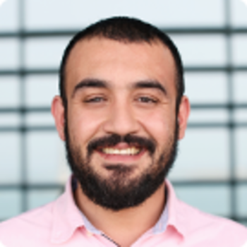
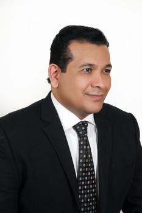
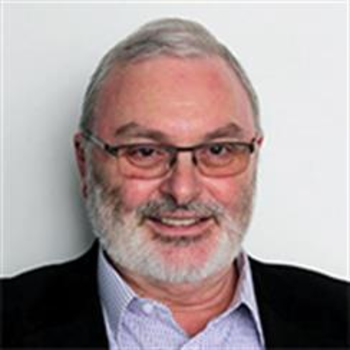
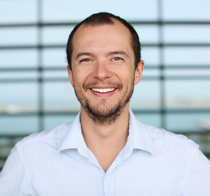

Facilitate scientific exchange between Saudi
researchers in the field of Bioinformatics, to establish
new research collaborations, and to raise awareness of
the importance of bioinformatics and Artificial
Intelligence in the future of medicine.
Build expertise through training in Bioinformatics
and Artificial Intelligence.
Initiate a scientific research infrastructure
necessary to have impact on national and international
scale, in particular through data sharing platforms
that allow the discovery and combination of
datasets.
Activities
SIBAIH will organize bi-monthly meetings in which 1 hour
will be dedicated to scientific talks and another hour for
networking and discussion. The locations of the meetings
will alternate between different venues and locations. In
additional to regular meetings, we organize
tutorials and workshops in the area of bioinformatics
which are open to Saudi and foreign researchers. We also
plan for an annual Bioinformatics research conference in
which scientific papers can be submitted and may be
published as proceedings in a bioinformatics journal.
We use Slack for coordinating events and
collaboration. You can join our Slack workspace
at this
link.
Resources
Online courses
lorep ipsum
Books
Other training materials
Adeeb Noor
Assistant Professor
of Bioinformatics.

Prof Adeeb Noor received his PhD in 2015 from the
University of Colorado at Boulder and joined the
Faculty of Computing and Information Technology at
King Abdulaziz University as an Assistant Professor in 2016.
Relevant expertise:
Bioinformatics
Drug repurposing
Drug-drug interactions
Pharmacogenomics
Ahmed Alfares
Lab Director at
Biochemical Molecular Genetics Laboratory and
Assistant Professor in Medicine.
Relevant expertise:
Medical genetics
Computational biology
Majed Alfadhel
Associate Professor
of Medicine, Deputy Executive Director, KAIMRC.

Prof Majid Alfahdel is the head of the genetics
department at National Guard Hospital and vice
president of King Abdullah International Medical
Research Center (KAIMRC).
Relevant expertise:
Medical genetics
Computational biology
Adeel Chaudhary
Professor of
Molecular Genetics.
Prof Adeel Chaudhary ...
Relevant expertise:
Bioinformatics
Drug repurposing
Drug-drug interactions
Pharmacogenomics
Takashi Gojobori
Distinguished Professor of Bioscience.
Prof Takashi Gojobori received his PhD in 1979
from Kyushu University, Japan, and is currently
Distinguished Professor of Bioscience at KAUST as
well as the Associate Director of the Computational
Bioscience Research Center at KAUST.
Professor Gojobori's research interests range from
comparative genomics and gene expression of neural
cells in sensory organs of various organisms to the
marine metagenomics of a diversity of
microorganisms. He aims to elucidate the
evolutionary origin of the neural network and its
application to synthetic biology for developments of
bioenergy.
Relevant expertise:
Bioinformatics
Metagenomics
Vladimir Bajic
Professor of Applied Mathematics.

Prof Vladimir Bajic received his PhD in 1989 from
the University of Zagreb and currently Professor in
Applied Mathematics and Computational Science at
KAUST and the Director of the Computational
Bioscience Research Center at KAUST.
Prof Vladimir Bajic is the author of over 400
research publications, over 100 bioinformatics and
machine learning software products, and nine
patents. His primary interest is in facilitating
biomedical discoveries using computational systems
combined with data modeling and artificial
intelligence (AI). Emphasis is on inference of new
information not explicitly present in biomedical data,
development of systems with such capabilities and
their industrial applications. Current research focus:
AI & health informatics; biomedical knowledge-, text-
& data-mining; AI/machine learning modeling; drug
repositioning; diagnostic, screening & prognostic
biomarkers; information integration.
Relevant expertise:
Bioinformatics
Drug repurposing
Drug-drug interactions
Pharmacogenomics
Adel Abuzenadah
Professor of Medicine.
Professor Adel Abu Zenadah is currently the Dean of the Faculty of Applied Medical Sciences before which he was the Vice President of King Fahd Medical Research Centre (KFMRC) and he is one of the founders of the Centre of Excellence in Genomic Medicine Research (CEGMR) in which he is the Deputy Director of the Administrative Affairs. Dr Abu Zenadah was graduated from king Abdulaziz University in the Medical Technology Sciences in 1991 then he travelled to get his M.Sc. in Pathological Sciences from Sheffield Hallam University, UK in 1994.
In 1998, Prof. Abu Zenadah was awarded his PhD in Molecular and Genetic Medicine field from the Sheffield Hallam University, UK. Dr Abu Zenadah in his PhD study was able to characterize the molecular basis of von Willebrand's disease. Dr Abu Zenadah is a very active and valuable staff member who published at least fifty peer-reviewed international publications in addition to presenting a significant number of posters and conference talks.
Prof. Abu Zenadah is very well known by his role in establishing a number of advanced research units at KFMRC of medical genetics research including the Technology and Innovation Centre, which is expected to have excellent impact on human diseases research including infertility treatment research with a state-of-the-art animal house research facility. As a matter of KAU recognition of his excellent administrative performance, Dr Adel Abu Zenadah has been appointed in 2013 as the Dean of the Faculty of Applied Medical Sciences.
Relevant expertise:
Molecular medicine
Robert Hoehndorf
Assistant Professor
of Computer Science.

Prof Robert Hoehndorf received his PhD in Computer
Science from the University of Leipzig in 2009. He
continued his research as a postdoctoral researcher at
the European Bioinformatics Institute, the University
of Cambridge, and Aberystwyth University, before
joining KAUST in 2014 as Assistant Professor in
Computer Science.
Robert's aim is to understand how formalized knowledge bases can
be used to systematically structure and integrate biological
knowledge, and how to utilize these formalized knowledge bases as
background knowledge to improve scientific discovery in biology and
biomedicine. To achieve these aims, Robert develops methods for
representing, integrating, and analyzing data and knowledge with the
specific aim to make the combination of data and formalized knowledge
accessible to data analytics and machine learning in bioinformatics. He
work on the interface of knowledge representation, reasoning,
statistical modelling and machine learning with biomedical
data. Biomedicine, and life sciences in general, are an ideal domain
for knowledge-driven data analysis methods due to the large number of
formal knowledge bases that have been developed to capture the broad,
diverse, and heterogeneous data and knowledge. Applications in human
genetics, specifically identifying genotype-phenotype relations in
Mendelian and complex disease as well as cancer, and predicting gene
functions and phenotypes, motivate and drive the methods he develops.